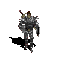

Their magical abilities were limited. With the lowest maximum magic of 50 and less mana per level than the other classes, they were forced to only use support spells like Stone Curse and teleport. With their low mana these support spells could be used only sparingly. Since their low level attack spells could not effectively damage high level monsters, attack spells like firebolt and charged bolt were not an option. Advocates and the succubi which could teleport away from the player were especially difficult. To follow them, might result in aggravating more enemies to attack the player. Although the modification which gave less light radius was intended to be a curse it proved very beneficial to warriors. With a lower light radius, the warrior would aggravate fewer monsters.
The main difference between a high level warrior and a low level warrior is the magical ability. With maxed out attributes a warrior has 50 mana at level 1, but with maxed out attributes and maxed experience level of 50 the warrior has 98 mana. This is almost double as much mana granted by experience level. By the time a hero reaches these high experience levels, they would have already had enough money to purchase items which give bonuses to magic to read high level books. This changes the play style, since the warrior will be able to kill ranged attackers with more ease by teleport and stone curse.
